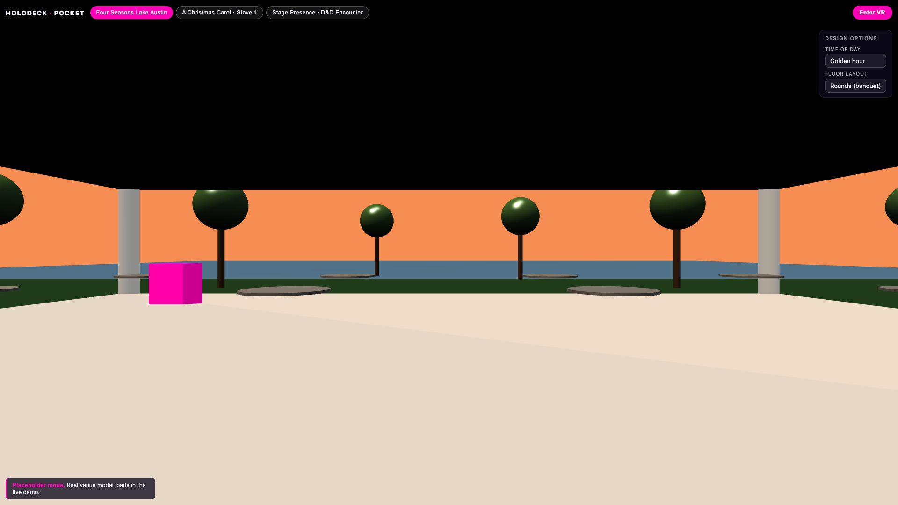
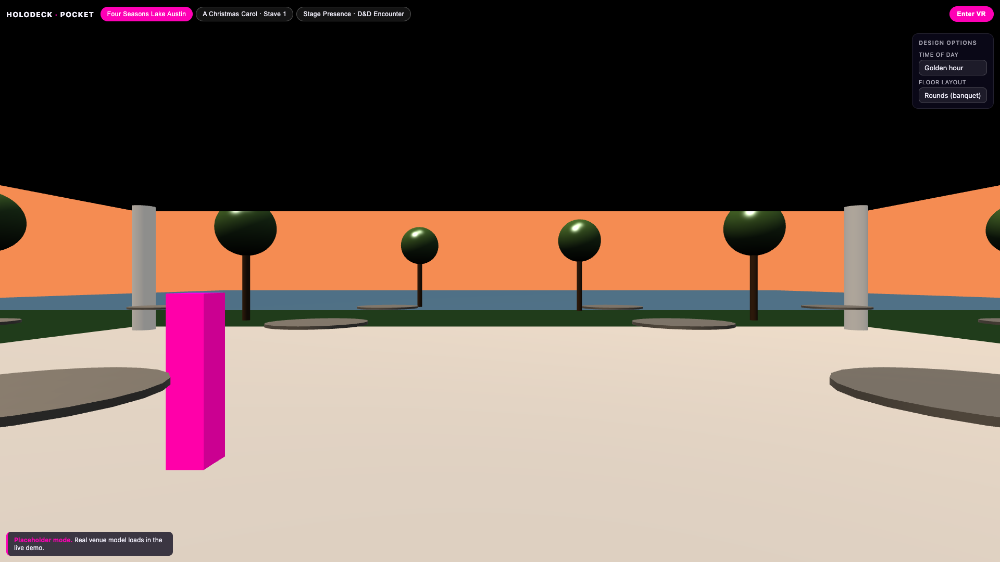
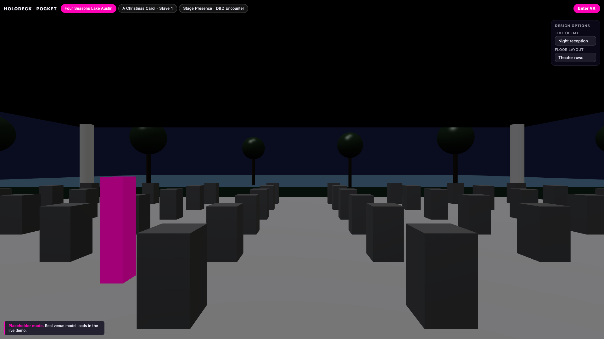
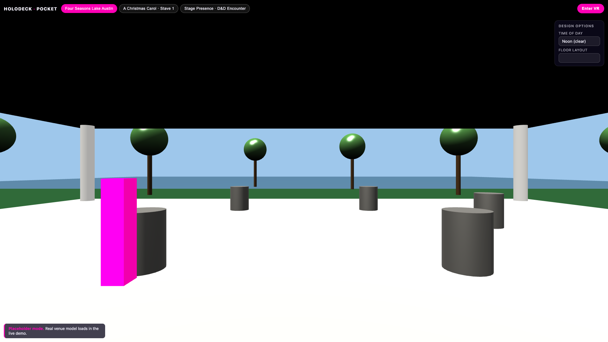
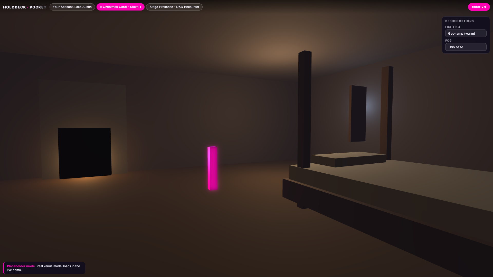
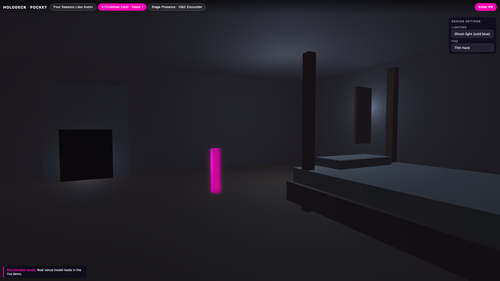
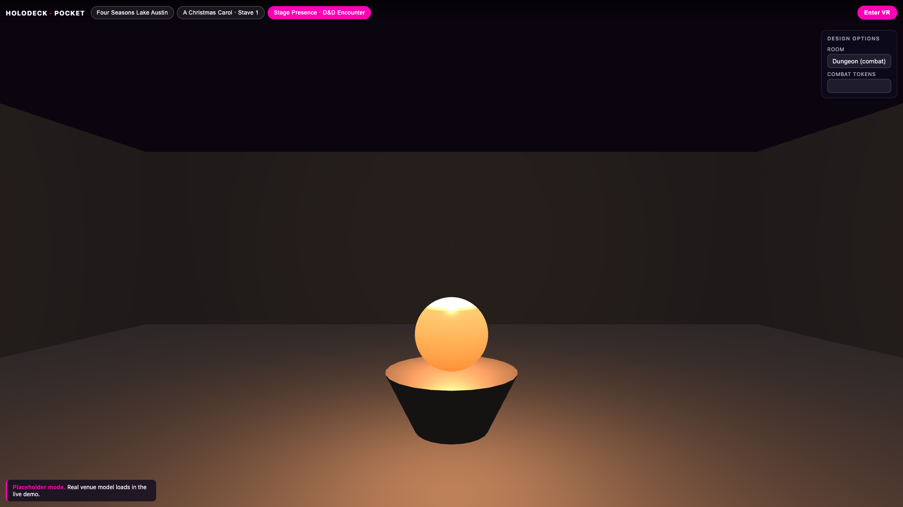

HOLODECK · POCKET
HOLODECK
· IN-A-POCKET
Scan. Walk. Toggle. Share.

ibrews.github.io / holodeck-pocket
Point your phone at the QR.
Walk through the venue.



Toggle the design options.



A Christmas Carol · Stave 1
A Christmas Carol · Ghost light
Stage Presence · D&D Encounter
Three rooms. One engine.
Scan. Walk. Toggle. Share.

ibrews.github.io/holodeck-pocket
Live at NXT BLD · FMX 2026